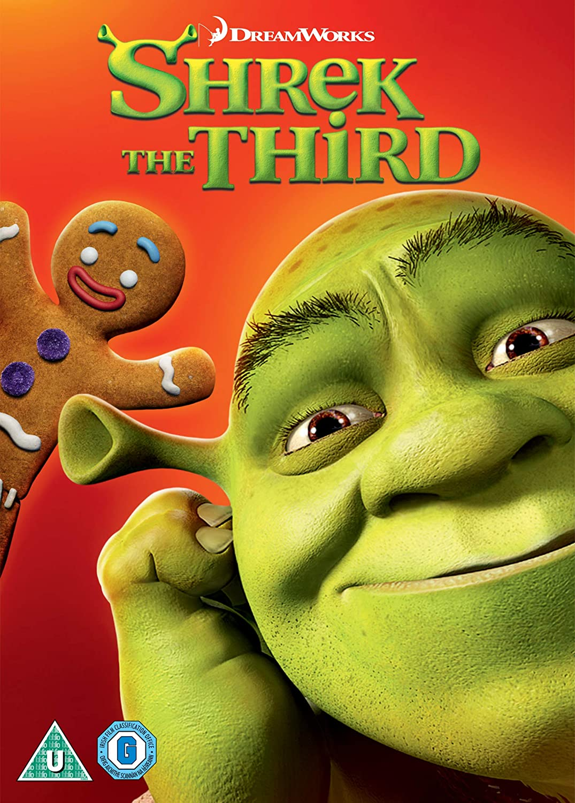
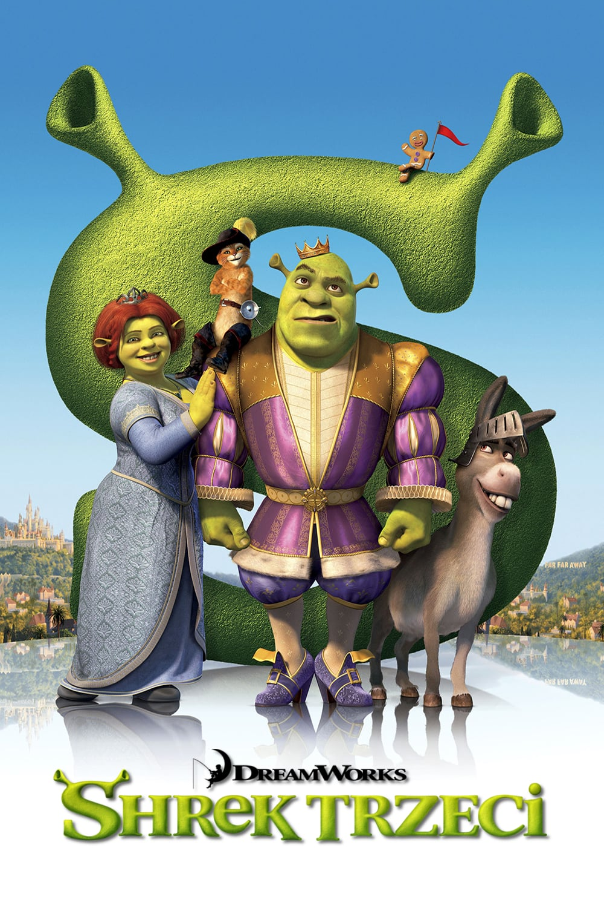
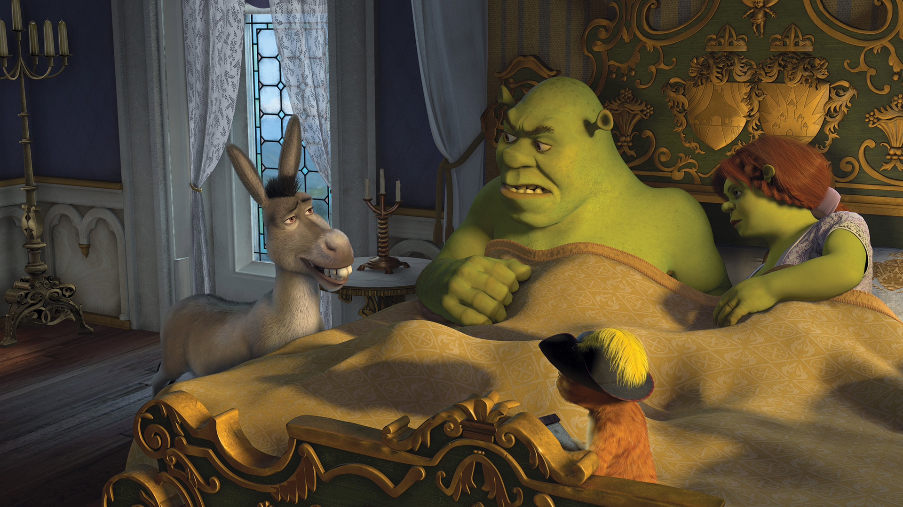
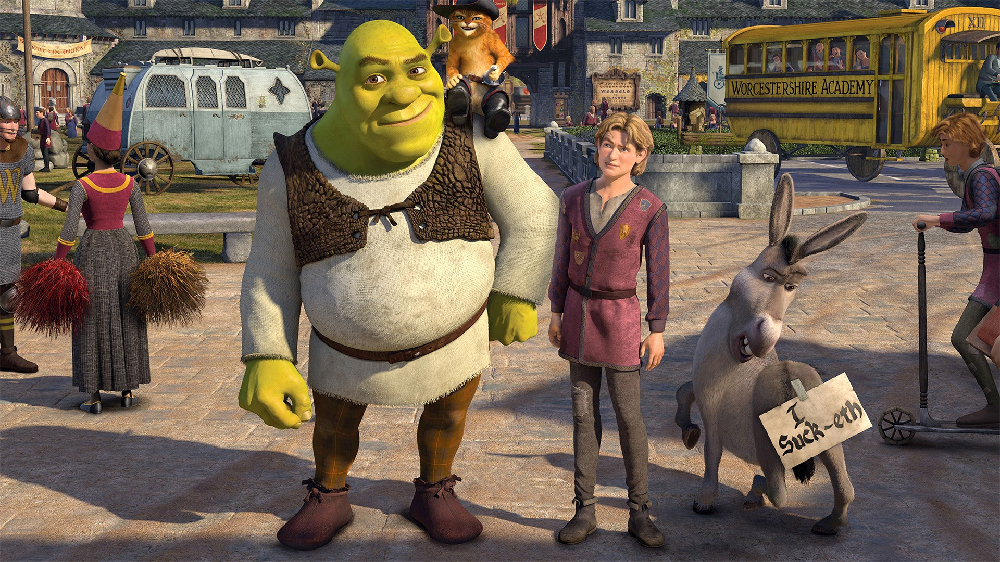
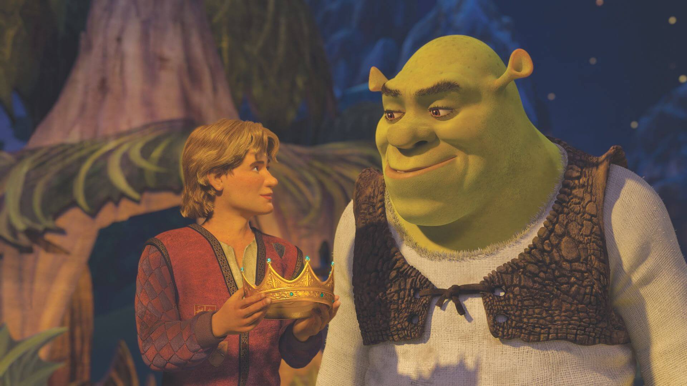

Shrek trzeci
| Gdy Harold, król Zasiedmiogórogrodu i ojciec Fiony, zaczyna ciężko chorować, jego zastępcą w wykonywaniu obowiązków zostaje Shrek, który nieudolnie wykonuje powierzone mu zadania. Na łóżu śmierci król wyjawia, że jedynym prawowitym dziedzicem tronu – oprócz Shreka – jest kuzyn Fiony, Artur. Wraz z Osłem i Kotem w butach wyruszają na poszukiwania chłopaka. Tuż przed wypłynięciem w podróż, Fiona informuje Shreka, że jest w ciąży. Gdy ekipa znajduje Artura, chłopak informuje, że nie chce zostać królem, bo – jak twierdzi – nie nadaje się do objęcia tronu. Tymczasem Książę z Bajki, wyśmiewany przez mieszkańców Zasiedmiogórogrodu, namawia „złe” postaci z bajek do przeprowadzenia zamachu stanu w królestwie. Zleca porwanie Fiony i jej przyjaciółek (Kopciuszka, Śpiącej Królewny, Królewny Śnieżki i Doris, siostry przyrodniej Kopciuszka) oraz matki, królowej Lillian, a także planuje zabójstwo Shreka podczas spektaklu teatralnego, który wystawia wspólnie z Roszpunką. W trakcie przedstawienia na pomoc ogrowi przylatuje Smoczyca wraz z Osłem, Kotem w butach i kompanami, którzy chcą uratować Shreka. Ostatecznie pojawia się Artur, który zachęca „złe” postaci z bajek do zmiany swego dotychczasowego życia. Artur zostaje nowym królem. |
NagrodyNOMINACJE BAFTA - Najlepszy film animowany Christopher Miller Saturn - Najlepszy film animowany Annie - Najlepsze indywidualne osiągnięcie: reżyseria animowanej produkcji kinowej Christopher Miller, Raman Hui Sterowiec - Ulubiony film animowany Sterowiec - Ulubiony dubbing w filmie animowanym Cameron Diaz - jako Księżniczka Fiona Sterowiec - Ulubiony dubbing w filmie animowanym Mike Myers - jako Shrek WSA - Najlepsza oryginalna muzyka roku Harry Gregson-Williams WSA - Kompozytor roku Harry Gregson-Williams także za: Deja Vu (2006) , Wpuszczony w kanał (2006) , Numer 23 (2007) Złota Szpula - Najlepszy montaż dźwięku w pełnometrażowym filmie animowanym - SFX, dialogi, technika ADR i imitacje dźwiękowe WYGRANE Kryształowa Statuetka - Ulubiony film rodzinny Sterowiec - Ulubiony dubbing w filmie animowanym Eddie Murphy - jako Osioł |
CiekawostkiKiedy Fiona zamierza powiedzieć Shrekowi o ciąży, Smoczyca stojąca w tle zmienia pozycję między ujęciami. Z pierwotnej pozycji przenosi się bardziej do przodu. W filmie występuje 23 kluczowych postaci pochodzących ze znanych widzom bajek. Animatorzy musieli wyszukać w innych bajkach 4,378 kolejnych by możliwe były sceny pokazujące tłum. Drzewa stworzone w animacji mają po 62 173 gałęzie i 191 545 liści. Kiedy Królowa uderza głową w drzwi, zaczyna nucić piosenkę "These Are a Few of My Favorite Things" z filmu "Dźwięki muzyki" (1965). Głos pod postać Królowej podkłada Julie Andrews, która grała też główną postać w musicalu "Dźwięki muzyki". Mimo że Osioł i Smoczyca mieli piątkę dzieci, poznaliśmy imiona tylko trojga z nich: Coco, Peanut i Bananas. Jest to pierwsza część, która nie rozpoczyna się otwarciem Księgi z Bajkami. Muzyka z scenie ataku księżniczek na zamek to utwory: "The Immigrant Song" Led Zepplin oraz "Barracuda" Heart. Soundtrack zawiera jednak wersję "Barracuda" w wykonaniu Fergie z Black Eyed Peas. |
|  |  |
|  |  |  |